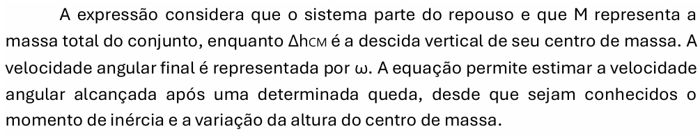
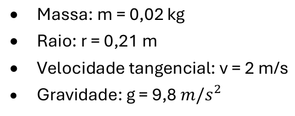
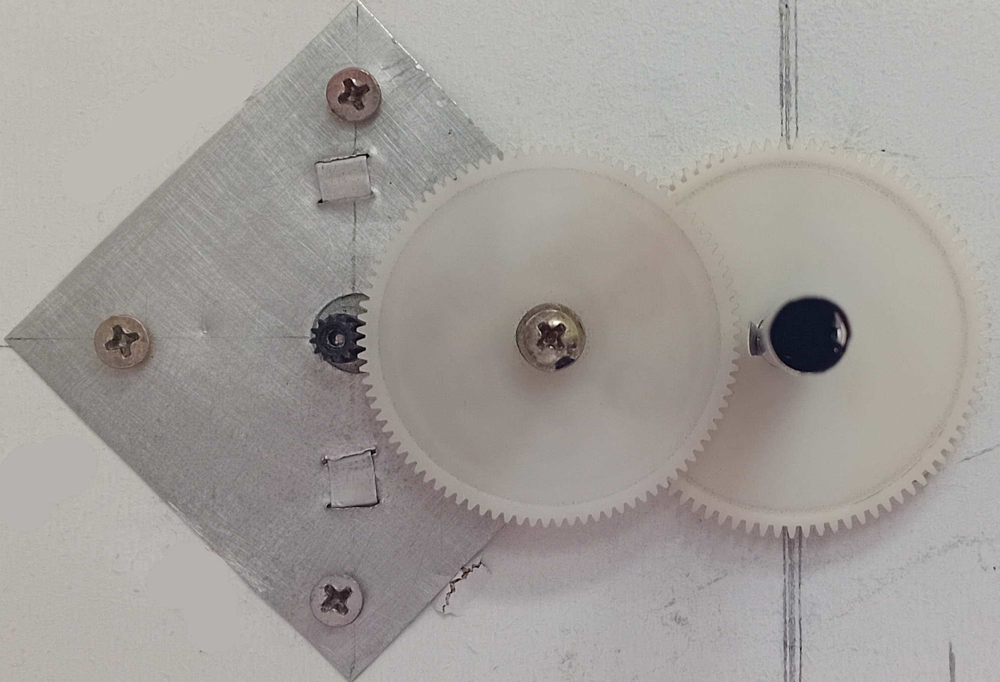

Apresentação da teoria
O projeto propõe uma ferramenta didática para a amostra científica, a ferramenta constitui-se de um sistema que quantifica a geração de energia em um gerador em relação à queda de pesos. Diferente da máquina de Joule que expressa valores somente para um evento, a ferramenta propõe variações de análises. Fazendo uso de engrenagens para aumento de frequência, analisando a quantidade de geradores e variações nos pesos, a máquina propõe uma análise profunda sobre a quantidade de energia que a queda de um corpo pode produzir, verificando também se essa energia produzida é capaz de alimentar um sistema perpétuo de movimento.
A máquina é composta por um pêndulo concêntrico e unido a uma engrenagem que funcionará como engrenagem motriz, em paralelo à engrenagem motriz está a engrenagem multiplicadora composta de duas engrenagens concêntricas de raios diferentes. A engrenagem motriz exerce força na engrenagem de raio menor. Em paralelo à engrenagem multiplicadora de raio maior, temos a engrenagem que rotaciona o eixo do gerador (Pinhão). E na saída do gerador temos um aparelho de medição elétrica. Externo a todo o sistema motriz, a máquina possui um transferidor para medidas dos ângulos do movimento pendular.
Os cálculos físicos da máquina exploram os princípios fundamentais da Segunda Lei de Newton relacionando a força Peso como força motriz do sistema. Os cálculos exploram também os conceitos físicos de movimentos circulares onde temos a queda de um peso em um sistema de pêndulo descrevendo a queda em forma circular. O estudo dos movimentos circulares também é usado para explicar as engrenagens da máquina e sua finalidade no aumento da frequência de rotações. Os cálculos da máquina abordam também os conceitos de Geradores elétricos, associação de geradores e medidas elétricas, abordando também as Forças dissipativas de um sistema.
A teoria do projeto consiste em analisar se a quantidade de energia gerada pela queda de um corpo possibilita alimentar outro sistema capaz de manter-se em movimento contínuo. No experimento, a amostra de peso é conectada na extremidade do pêndulo e levada ao topo para se obter a queda livre. Observando o transferidor anota-se o ângulo inicial da queda. Em seguida, provoca-se o desequilíbrio sem exercer forças a favor da gravidade, para que o peso caia e descreva sua queda em forma circular. Após a queda do peso observa-se o ângulo da altura máxima que o peso alcançou no sistema pendular. Anota-se também a quantidade de energia que aparece nos medidores elétricos conectados ao gerador. Obtida a relação de pesos e geração de energia, calcula-se a quantidade de energia necessária para que o peso complete a rotação no pêndulo a partir do ângulo da altura máxima que o peso alcançou no evento da queda.
Existem várias possibilidades de análises, seja na mudança de pesos, na mudança do sistema de engrenagens, na mudança do raio do pêndulo, ou na associação de geradores. A partir da coleta de dados pode-se concluir por conta própria se um sistema de movimento perpétuo é capaz ou não de ser construído. Concluindo assim o objetivo teórico do projeto, que é oferecer uma ferramenta que quantifica a energia gerada na queda de um corpo, investigando a possibilidade de construção de um moto-perpétuo.
Conceitos matemáticos e físicos aplicados
Segunda Lei de Newton
A Segunda Lei de Newton estabelece que a aceleração de um corpo é determinada pela força resultante que atua sobre ele e por sua massa. Em termos físicos, uma força resultante maior produz maior aceleração para uma mesma massa, enquanto um corpo de maior massa exige uma força maior para alcançar a mesma aceleração.
Essa lei é expressa matematicamente pela relação entre força resultante, massa e aceleração:
No caso de uma massa em movimento circular, mesmo que sua velocidade
escalar permaneça constante, sua direção muda continuamente. Por isso, existe uma
aceleração direcionada para o centro da trajetória, chamada aceleração centrípeta.
Quando uma massa está presa a uma haste rígida e se movimenta em uma
trajetória circular, a haste restringe seu movimento a uma distância aproximadamente
constante em relação ao eixo de rotação. Nesse caso, é necessário analisar as forças
em duas direções distintas:
A) Direção radial
É a direção que aponta para o centro da trajetória circular. A componente radial
da força resultante produz a aceleração centrípeta, responsável pela mudança contínua
da direção da velocidade.
B) Direção tangencial
É a direção tangente à trajetória. A componente tangencial da força resultante
altera o módulo da velocidade da massa, fazendo-a acelerar ou desacelerar.
Essas duas componentes são importantes porque, durante uma queda ao longo
de uma trajetória circular, a massa pode apresentar simultaneamente aceleração
centrípeta e aceleração tangencial.
A aceleração centrípeta é dada por:
Aplicando a Segunda Lei de Newton na direção radial, obtemos:
$$\sum F_r = m \frac{v^2}{r}$$
Essa expressão indica que a força resultante dirigida para o
centro depende da massa, do quadrado da velocidade e do raio da trajetória.
Considere uma massa m presa à extremidade de uma
haste de comprimento r, articulada em um eixo fixo.
Quando a massa é liberada de uma posição inclinada,
a gravidade pode fazê-la descer descrevendo um arco de circunferência.
Força gravitacional
O peso da massa é dado por:
$$P = m \cdot g$$
A componente tangencial é:
$$F_t = m \cdot g \cdot \sin\theta$$
Portanto, pela Segunda Lei de Newton:
$$m \cdot g \cdot \sin\theta = m \cdot a_t \implies a_t = g \cdot \sin\theta$$
Essa relação mostra que a aceleração tangencial depende da inclinação da haste em relação à vertical, e não da massa do corpo.
Aceleração angular
Como a massa percorre um arco de raio r, a aceleração tangencial também pode ser escrita como:
$$a_t = r \cdot \alpha$$
$$m \cdot r \cdot \alpha = m \cdot g \cdot \sin\theta$$
Logo:
$$\alpha = \frac{g}{r} \sin\theta$$
Essa equação descreve como a gravidade produz aceleração angular durante o movimento da haste.
Força radial
A força radial resultante é responsável por manter a massa na trajetória circular:
$$\sum F_r = m \frac{v^2}{r}$$
$$F_{\text{haste},r} - m \cdot g \cdot \cos\theta = m \frac{v^2}{r}$$
Assim:
$$F_{\text{haste},r} = m \frac{v^2}{r} + m \cdot g \cdot \cos\theta$$
O sinal da força exercida pela haste indica sua direção: ela pode atuar para fora ou para dentro, conforme as condições do movimento. Diferentemente de um fio flexível, uma haste rígida pode exercer tração ou compressão.
Aplicações dos cálculos na máquina
Considerando uma massa de 0,02 kg, presa a uma haste de 0,21 m, que passa por um
ponto da trajetória com velocidade tangencial de 2 m/s.
Cálculo da aceleração centrípeta
Utilizamos a fórmula e substituindo os valores:
$$a_c = \frac{v^2}{r} = \frac{2^2}{0,21} \approx 19,05\text{ m/s}^2$$
Cálculo da força resultante centrípeta
Aplicando a Segunda Lei de Newton na direção radial e substituindo os valores:
$$F_r = m \cdot a_c = 0,02 \cdot 19,05 \approx 0,381\text{ N}$$
Interpretação física: para uma massa de 20 gramas
que percorre uma trajetória circular de raio 21 centímetros a
uma velocidade tangencial de 2 m/s, a resultante das
forças na direção radial deve ter módulo aproximado
de 0,381 N, orientada para o centro da trajetória.
Esse valor corresponde à força resultante radial,
e não necessariamente à força exercida exclusivamente
pela haste. Para calcular a força da haste, seria necessário
conhecer também a posição angular da massa e considerar
a componente radial da gravidade.
Queda de um corpo em movimento circular preso a uma haste rígida
A aceleração centrípeta e a força resultante radial nesta análise
nos permitem ampliar o estudo para outras propriedades mecânicas
do sistema. O objetivo é estudar como a distribuição de massa,
a geometria da haste, a energia e as restrições do
movimento influenciam a queda dos corpos.
Centro de massa do conjunto
O centro de massa representa a posição média da
distribuição de massa de um sistema. Em um mecanismo
formado por uma haste rígida e uma ou mais massas
acopladas a ela, sua posição depende tanto da massa
da haste quanto da posição e da massa dos corpos presos a ela.
Para um sistema de corpos discretos, a posição
do centro de massa é calculada por:
$$x_{CM} = \frac{\sum_i m_i x_i}{\sum_i m_i}$$
De forma semelhante, podem ser calculadas as coordenadas Y CM e Z CM,
conforme a geometria do sistema. Para uma haste uniforme de
comprimento L, massa Mh e uma massa pontual m localizada
a uma distância d de uma extremidade, temos:
$$x_{CM} = \frac{M_h (L/2) + m \cdot d}{M_h + m}$$
Essa expressão considera a extremidade usada como
origem das coordenadas. O centro de massa da haste uniforme,
isoladamente, encontra-se no seu ponto médio,
mas a massa acoplada desloca o centro de massa do conjunto.
Conhecer o centro de massa ajuda a identificar como a
distribuição de peso influencia o equilíbrio,
o torque gravitacional e a resposta dinâmica do mecanismo durante a queda.
Momento de inércia da haste e das massas acopladas
O momento de inércia mede a resistência de um corpo à
alteração de seu movimento de rotação. Ele depende da
quantidade de massa e de como essa massa está distribuída
em relação ao eixo de rotação. Para uma haste uniforme,
de massa M h e comprimento L, articulada em uma extremidade:
$$I_h = \frac{1}{3} M_h \cdot L^2$$
Para uma massa pontual m, localizada a uma distância r do eixo:
$$I_m = m \cdot r^2$$
Assim, para uma haste com uma massa pontual acoplada:
$$I_{\text{total}} = \frac{1}{3} M_h L^2 + m \cdot r^2$$
Essa relação permite investigar como a posição de uma
massa na haste modifica a resistência à rotação.
Para a mesma massa, quanto maior a distância ao eixo,
maior será sua contribuição para o momento de inércia.
A expressão pressupõe que a haste gira em torno de uma
extremidade fixa e que a massa acoplada pode ser
aproximada por um ponto material.
Torque ou momento de força
O torque representa a capacidade de uma força
produzir rotação em torno de um eixo. No movimento de
queda, a força gravitacional pode gerar um torque que
acelera a haste e as massas acopladas.
Para uma massa pontual a uma distância r do eixo,
o módulo do torque gravitacional é:
$$\tau_g = m \cdot g \cdot r \cdot \sin\theta$$
$$\sum \tau = I_{\text{total}} \cdot \alpha$$
Essa relação é a forma rotacional da Segunda Lei de Newton.
Ela permite determinar a aceleração angular a partir do torque
resultante e do momento de inércia. Comparar o torque gravitacional
em diferentes posições da haste ajuda a explicar
por que a aceleração angular varia durante a queda.
Conservação da energia mecânica
Transformação da energia potencial gravitacional em energia cinética
durante a queda. Quando o sistema desce, sua energia potencial diminui.
Em condições ideais, sem atrito ou resistência do ar,
essa variação corresponde ao aumento da energia cinética de rotação.
$$E_p + E_c = \text{constante}$$
Para um sistema que gira em torno de um eixo fixo:
$$M \cdot g \cdot \Delta h_{CM} = \frac{1}{2} I_{\text{total}} \cdot \omega^2$$

Velocidade angular e velocidade linear
Em uma haste rígida que gira em torno de um eixo fixo,
todos os pontos possuem a mesma velocidade angular
instantânea, mas suas velocidades lineares dependem
da distância ao eixo. A relação é:
$$v = \omega \cdot r$$
Assim, um ponto localizado mais distante do eixo
apresenta maior velocidade linear para a mesma
velocidade angular. A aceleração tangencial
também pode ser relacionada à aceleração angular:
$$a_t = \alpha \cdot r$$
No experimento da máquina, observando diferentes
pontos da haste, é possível comparar suas velocidades
e acelerações lineares, mesmo que todos
pertençam ao mesmo corpo rígido.
Tração em corpos presos a uma haste rígida
A tração é uma força de contato que tende a puxar
um corpo ao longo de um elemento que o conecta a
outro corpo ou a um suporte. No estudo de movimentos
circulares, ela aparece principalmente quando
a massa está presa por um fio ou cabo.
No projeto, existe uma distinção importante: uma haste
rígida pode exercer tanto tração quanto compressão,
dependendo das forças e do movimento. Por isso,
é mais geral falar em força exercida pela haste
sobre a massa. Se o corpo estiver preso por um fio
flexível, a força transmitida pelo fio é denominada
tensão ou tração no fio.
Como calcular a tração no movimento circular
Considere uma massa m presa a um fio de comprimento r,
girando em uma trajetória circular vertical.
A força de tração depende da velocidade da
massa e de sua posição na trajetória. A equação
fundamental, tomando o sentido para o centro como
positivo, é:
$$\sum F_r = \frac{m \cdot v^2}{r}$$
Massa na posição mais baixa da trajetória:
Na posição inferior, a tração aponta para cima, em direção
ao centro da circunferência, enquanto o peso aponta para baixo. Assim:
$$T - m \cdot g = \frac{m \cdot v^2}{r} \implies T = \frac{m \cdot v^2}{r} + m \cdot g$$
Massa na posição mais alta da trajetória:
Na posição superior, tanto a tração quanto o peso apontam para o centro da trajetória. Portanto:
$$T + m \cdot g = \frac{m \cdot v^2}{r} \implies T = \frac{m \cdot v^2}{r} - m \cdot g$$
Essa expressão exige que a tração calculada seja
não negativa para que o fio permaneça esticado.
Se o resultado exigir tração negativa, o fio não consegue
manter aquela trajetória circular nas condições consideradas.
Aplicações dos cálculos na máquina

Primeiro, calculamos a força necessária para a resultante centrípeta:
$$\frac{m \cdot v^2}{r} = \frac{0,02 \cdot 2^2}{0,21} \approx 0,381\text{ N}$$
O peso da massa é:
$$m \cdot g = 0,02 \cdot 9,81 = 0,1962\text{ N}$$
Na posição inferior:
$$T = 0,381 + 0,1962 = 0,5772\text{ N}$$
Na posição superior:
$$T = 0,381 - 0,1962 \approx 0,185\text{ N}$$
Esses dois resultados são válidos se a velocidade for 2 m/s
na posição específica considerada. Eles ilustram
como a tração varia conforme a orientação do
movimento em relação à gravidade.
A haste rígida do experimento
Para uma massa presa a uma haste rígida, na posição inferior, a equação radial pode ser escrita como:
$$F_{\text{haste}} - m \cdot g = \frac{m \cdot v^2}{r} \implies F_{\text{haste}} = \frac{m \cdot v^2}{r} + m \cdot g$$
Esse resultado representa a componente radial da força exercida pela haste. Na posição superior, a componente radial do peso aponta para o centro, de modo que:
$$F_{\text{haste}} = \frac{m \cdot v^2}{r} - m \cdot g$$
Aqui, o sinal positivo representa uma força para dentro e o negativo, uma força
para fora. Uma haste rígida pode transmitir ambas as direções de força, ao contrário de
um fio ideal, que só pode puxar. a análise da tração ou da força exercida pela haste
permite determinar a intensidade da força de vínculo necessária para manter a massa
na trajetória circular. Seu valor depende da massa, da velocidade, do raio e da posição
angular do corpo, sendo importante distinguir a tração de um fio da força que uma haste
rígida pode transmitir.
Elementos de máquinas (engrenagens)
As engrenagens são elementos mecânicos utilizados para transmitir
movimento rotacional e torque entre eixos. Elas são encontradas em
diversos equipamentos, como motores, geradores acionados mecanicamente,
relógios, redutores, multiplicadores de velocidade e máquinas industriais.
Quando duas engrenagens com dentes compatíveis estão engrenadas,
o contato entre seus dentes transmite movimento de uma para a outra.
Em condições ideais, a relação entre suas velocidades de rotação
depende de seus raios primitivos ou, de forma equivalente, do número de dentes.
Uma engrenagem maior, ao acionar uma menor, produz aumento da
velocidade angular da engrenagem conduzida. Por outro lado,
quando uma engrenagem menor aciona uma maior, ocorre redução
da velocidade de rotação, acompanhada, idealmente,
de aumento do torque disponível.
Descrição do sistema de engrenagens do aparelho

Fonte: Autores
O mecanismo é composto por três conjuntos funcionais:
- Engrenagem motriz: Raio = $24\text{ mm}$ (entrada do sistema).
- Associação concêntrica: Engrenagem menor de raio $4,5\text{ mm}$ e Engrenagem maior de raio $22,5\text{ mm}$ (giram juntas no mesmo eixo).
- Pinhão do motor/gerador: Raio = $1,5\text{ mm}$ (saída do trem de transmissão).
Relação matemática entre as rotações
Para calcular as rotações, consideramos inicialmente engrenagens externas ideais, sem escorregamento. Quando duas engrenagens estão engrenadas, suas velocidades tangenciais no ponto de contato possuem o mesmo módulo:
$$\omega_1 r_1 = \omega_2 r_2$$
Como a velocidade angular é proporcional à frequência de rotação, podemos escrever:
$$N_2 = N_1 \cdot \frac{r_1}{r_2}$$
Em que $N_1$ e $N_2$ são as rotações da engrenagem motriz e conduzida, e $r_1, r_2$ são os respectivos raios primitivos.
Aplicações do cálculo na máquina
Primeiro estágio: engrenagem motriz para engrenagem menor
Dados: $r_1 = 24\text{ mm}$, $r_2 = 4,5\text{ mm}$. A relação de transmissão é:
$$i_1 = \frac{r_1}{r_2} = \frac{24}{4,5} \approx 5,33$$
Assim, $N_2 \approx 5,33 \cdot N_1$.
Segundo estágio: engrenagem maior para o pinhão
Dados: $r_3 = 22,5\text{ mm}$, $r_4 = 1,5\text{ mm}$. A relação é:
$$i_2 = \frac{22,5}{1,5} = 15$$
Como a engrenagem maior gira com a mesma rotação da menor ($N_2$), a rotação final do pinhão é $N_3 = 15 \cdot N_2$.
Relação total de transmissão
Multiplicando as duas relações:
$$i_{\text{total}} = i_1 \cdot i_2 = \frac{24}{4,5} \cdot \frac{22,5}{1,5} = 80$$
Para cada rotação completa da engrenagem motriz, o pinhão realiza teoricamente 80 rotações completas.
Cálculo das rotações e frequências
A conversão entre rotação em rpm ($N$) e frequência mecânica em Hz ($f$) é dada por $f = N / 60$.
| Posição do mecanismo |
Rotação |
Frequência mecânica |
| Engrenagem motriz |
$N_1$ |
$N_1 / 60$ |
| Engrenagem menor |
$5,333 N_1$ |
$5,333 N_1 / 60$ |
| Engrenagem maior |
$5,333 N_1$ |
$5,333 N_1 / 60$ |
| Pinhão do motor/gerador |
$80 N_1$ |
$80 N_1 / 60$ |
Consequências mecânicas da multiplicação
A potência rotacional é expressa por $P = \tau \cdot \omega$. Para uma transmissão ideal com relação $80:1$:
$$\tau_{\text{saída}} = \frac{\tau_{\text{entrada}}}{80}$$
Em um sistema real, o atrito reduz a potência transmitida, e o torque de resistência oferecido pelo gerador afeta a velocidade da engrenagem motriz.
Dinâmica de máquinas (gerador)

Caminho da imagem: imagens/motor_rf300.png
A dinâmica de máquinas analisa o movimento considerando forças, torques e perdas de energia. No aparato experimental, o movimento pendular faz com que a haste oscile, transmitindo energia mecânica ao conjunto de engrenagens para mover o eixo do pequeno motor de corrente contínua funcionando como gerador.
Características do motor-gerador RF-300C-11440
O componente é um micromotor CC com escovas que funciona de maneira reversível. Quando acionado mecanicamente por uma fonte externa, produz tensão elétrica nos terminais. Especificações típicas da série RF-300 indicam tensões nominais entre $2\text{ V}$ e $3\text{ V}$ com rotação sem carga entre $2200\text{ rpm}$ e $3500\text{ rpm}$.
Relações físicas aplicadas ao sistema
1. Energia potencial gravitacional
$$E_p = m \cdot g \cdot \Delta h$$
2. Transmissão por engrenagens
$$\omega_{\text{saída}} = 80 \cdot \omega_{\text{entrada}}$$
3. Geração de tensão elétrica
$$E = k_e \cdot \omega$$
Em que $E$ é a força eletromotriz induzida e $k_e$ é a constante do motor.
Rotação do pinhão e a frequência elétrica do gerador
Em um gerador síncrono, a frequência elétrica $f_e$ relaciona-se com a rotação por:
$$f_e = \frac{p \cdot N}{60}$$
onde $p$ é o número de pares de polos.
Conclusão para a análise do mecanismo
Como o movimento é pendular, a haste não gira indefinidamente, mas oscila. Mesmo com uma rotação parcial da engrenagem motriz, o pinhão realiza várias voltas devido à taxa de 80:1.
Relação matemática entre a haste e o pinhão
Para um ângulo $\theta$ (em graus) percorrido pela engrenagem motriz, o número de voltas do pinhão é:
$$N_p = 80 \cdot \left(\frac{\theta}{360^\circ}\right) = \frac{2\theta}{9}$$
Dividindo a queda em ângulos
| Ângulo percorrido pela motriz ($\theta$) |
Voltas da motriz |
Voltas do pinhão |
| $5^\circ$ | 0,0139 | 1,11 |
| $10^\circ$ | 0,0278 | 2,22 |
| $15^\circ$ | 0,0417 | 3,33 |
| $30^\circ$ | 0,0833 | 6,67 |
| $45^\circ$ | 0,1250 | 10,00 |
| $60^\circ$ | 0,1667 | 13,33 |
| $90^\circ$ | 0,2500 | 20,00 |
Qual seria o ângulo máximo da queda?
Para uma queda a partir da posição horizontal ($\theta = 90^\circ$) até a vertical inferior, a engrenagem motriz executa 0,25 voltas e o pinhão completa teoricamente 20 voltas.
Energia potencial disponível nessa hipótese
$$\Delta E_p = m \cdot g \cdot L (1 - \cos\theta)$$
Para $\theta = 90^\circ$, $m = 0,034\text{ kg}$ e $L = 0,216\text{ m}$:
$$\Delta E_p = 0,034 \cdot 9,81 \cdot 0,216 \approx 0,0720\text{ J}$$
Medições elétricas
Instrumentação elétrica - Multímetro MXT YX-360TRn
Para a medição da tensão elétrica produzida pelo motor-gerador RF-300C-11440, utiliza-se o multímetro analógico MXT YX-360TRn de ponteiro móvel na escala de $10\text{ V DCV}$. A opção por instrumentos analógicos simples justifica-se pelo caráter demonstrativo e qualitativo do protótipo experimental.